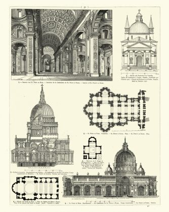
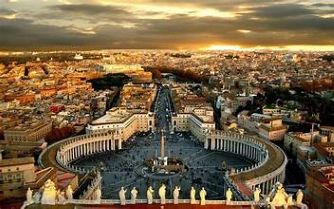
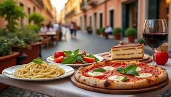
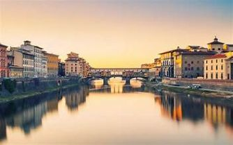
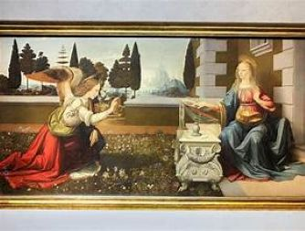
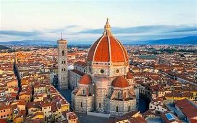
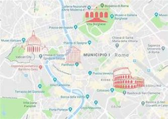

My Italian Vacation
Welcome to my Italian vacation! I would like to share some of my experiences of Rome and Florence. Italy has always been a place I have wanted to visit. The culture is rich. The art is world-renowned. The architecture is focus of many academic programs. And the food is to die for. But what separates a good vacation from a life changing experience is the planning. Today I would like to share all of this with you.

Rome
Rome, often called the Eternal City, is a sprawling Mediterranean metropolis that serves as the historic and cultural heart of Italy. As the former seat of the Roman Empire and the current home of the Vatican City, it offers an unparalleled layer-cake of history where ancient ruins like the Colosseum sit alongside Renaissance palazzos and vibrant modern neighborhoods. Whether you're tossing a coin into the Trevi Fountain or navigating the cobblestone streets of Trastevere, the city thrives on a unique blend of monumental grandeur and an effortless, sun-drenched dolce vita lifestyle.
Art

While "Roman art" typically refers to the mosaics, frescoes, and realistic portrait sculpture of the ancient Empire, the Pietà is the crown jewel of the Roman Renaissance. Housed in St. Peter's Basilica, this 1499 masterpiece by Michelangelo Buonarroti remains one of the most influential works in art history.

The Pietà: A Closer Look
The sculpture depicts the body of Jesus on the lap of his mother Mary after the Crucifixion—a theme common in Northern Europe but revolutionary in Italy at the time. Humanism and Idealism: Michelangelo departed from the trend of showing intense agony. Instead, the figures possess a "divine" beauty; Mary appears youthful and serene, representing her eternal purity, while Christ’s body shows a peaceful, slumped grace rather than the rigors of death. The Composition: The figures form a pyramidal structure, a hallmark of High Renaissance art. This provides a sense of balance and stability to the heavy marble, drawing the viewer's eye up toward Mary’s grieving face. Material Mastery: Michelangelo transformed a single block of Carrara marble into textures that mimic soft skin and heavy, cascading drapery. The finish is so highly polished that it reflects light differently than almost any other sculpture of its era. The Signature: Interestingly, this is the only work Michelangelo ever signed. Legend has it he overheard visitors attributing the statue to another artist, so he carved MICHAELA[N]GELUS BONAROTUS FLORENTIN[US] FACIEBAT across the sash on Mary's chest.
Architecture

Roman architecture is a testament to engineering prowess, characterized by the revolutionary use of concrete, the true arch, and the vault, which allowed for the creation of vast, interior spaces without the need for dense forests of pillars. While ancient Rome perfected the dome—best seen in the Pantheon—this legacy culminated centuries later in the Baroque grandeur of St. Peter's Square (Piazza San Pietro).

Designed by Gian Lorenzo Bernini, the square features a massive elliptical forecourt framed by four rows of towering Doric columns arranged in two semicircular colonnades. These "motherly arms of the church" were architecturally engineered to create a sense of symmetry and awe, guiding the eyes of pilgrims toward the basilica's facade while framing the Egyptian obelisk at its center, perfectly blending classical Roman proportions with the dramatic theatricality of the 17th century.Food

Roman cuisine, or cucina romana, is celebrated for being "honest" food—traditionally known as cucina povera (peasant cooking) that relies on a few high-quality, seasonal ingredients to create bold flavors. The backbone of the Roman menu is defined by the "Big Four" pasta dishes: Cacio e Pepe, Gricia, Amatriciana, and the world-famous Carbonara, all of which utilize Pecorino Romano cheese and guanciale (cured pork cheek).

Florence
Nestled in the heart of Tuscany, Florence is a sun-drenched sanctuary that feels more like a living museum than a modern city. As the undisputed Cradle of the Renaissance, its skyline is dominated by the terracotta curves of Brunelleschi's Dome, while its narrow, medieval streets whisper stories of the Medici, Michelangelo, and Dante. From the world-class masterpieces housed in the Uffizi Gallery to the golden glow of the sunset over the Ponte Vecchio, Florence invites you to slow down, savor a glass of Chianti, and immerse yourself in a legacy of art and elegance that has shaped the world for centuries.
Art

Florentine art is defined by its pursuit of naturalism, perspective, and the revival of classical ideals, transitioning from the flat icons of the Middle Ages to the breathing reality of the Renaissance. A pivotal moment in this evolution is captured in Leonardo da Vinci's Annunciation, painted while he was still a young apprentice in Verrocchio's workshop. The work showcases the early hallmarks of Florentine genius: the Archangel Gabriel and the Virgin Mary are set against a meticulously detailed Tuscan landscape, utilizing atmospheric perspective to create a sense of vast distance. Leonardo's budding mastery is evident in the realistic rendering of the botanical life at the figures' feet and the innovative, soft shadows—known as sfumato—that would eventually become his artistic signature, marking a departure from the sharp outlines of his predecessors.
Architecture

Florentine architecture is the physical manifestation of Renaissance rationalism, trading the verticality of the Gothic style for horizontal harmony, symmetry, and classical proportion. The city's aesthetic was largely defined by pioneers like Filippo Brunelleschi, who looked to ancient Roman ruins to rediscover the use of mathematical perspective in building. This is most iconic in the Florence Cathedral (Il Duomo), where the massive self-supporting dome proved that engineering could achieve the seemingly impossible. Throughout the city, the use of local pietra forte (tan sandstone) and pietra serena (grey macigno) creates a unified, dignified palette, seen in the rusticated facades of the Palazzo Medici Riccardi and the elegant, airy loggias that turn public squares into open-air masterpieces of civic pride.
Food
Florentine cuisine is a celebration of rustic, hearty flavors that prioritize high-quality ingredients and traditional Tuscan techniques. Looking at the specialties in the photo, you can see the pillars of a true Florentine feast. Bistecca alla Fiorentina: A massive, thick-cut T-bone from Chianina cattle, traditionally grilled over wood coals and served rare with salt and Tuscan olive oil. Pappardelle al Cinghiale: Wide, ribbon-like pasta tossed in a savory, slow-cooked wild boar ragu, representing the heart of Tuscan comfort food. Lampredotto: Florence's iconic street food sandwich, featuring tender, slow-cooked cow stomach served on a broth-soaked bun with zesty green sauce. Tagliatelle with Truffles: Fresh, long pasta finished with shaved truffles or porcini mushrooms, highlighting the rich, earthy flavors of the nearby San Miniato hills.
Planning
Planning a trip to Italy is essential because the country's most iconic sites, such as the Vatican Museums and the Uffizi Gallery, often require reservations months in advance to avoid grueling wait times. Furthermore, strategic scheduling allows you to balance popular hotspots with hidden gems, ensuring you navigate the seasonal crowds and regional logistics for a more authentic, stress-free experience.
Mobile apps like trainline, Get-Your-Guide, and the Airelo virtual sim can be an enormous benefit when traveling abroad. Using the Trainline app is a game-changer for navigating Italy's rail network because it allows you to compare schedules and prices between the national carrier, Trenitalia, and the private high-speed competitor, Italo, all in one interface. This ensures you always find the cheapest or fastest route without switching between different websites.
Using Google Calendar to map your trip is incredibly helpful because it provides a centralized, chronological view of your reservations and travel times, preventing you from over-scheduling your days. It integrates seamlessly with Google Maps by automatically pulling in location data; when you tap an event address, it opens directly in Maps to provide walking or transit directions, and can even display your upcoming "Calendar" events as labeled pins on your map for easier visual navigation.

Google Maps is an essential tool for navigating Italy's intricate medieval streets, where its walking directions and real-time transit updates for buses and metros help you avoid getting lost in the labyrinthine "vicolos." One of its most powerful travel features is offline maps, which allows you to download entire city centers like Rome or Florence in advance so you can navigate via GPS even when you lose cell service or want to save data. Additionally, it serves as a live guidebook, providing up-to-date opening hours, peak crowd times, and reviews for local trattorias, ensuring you never show up to a "closed" sign during the afternoon riposo.